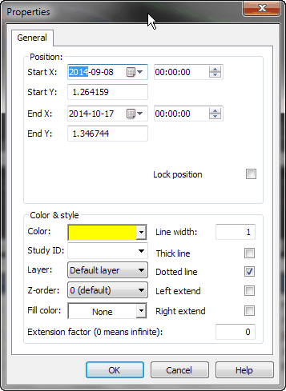
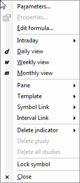

Line study properties window

In the study properties window you can select start and end coordinates as
well as line colors and styles. You can also enable automatic left- or right-line
extension so that the line will be extended when new quotes become available.
The following fields are available:
- Start X, Start Y, End X, End Y - study start and end coordinates.
- Third X, Third Y - visible only for TRI-POINT studies
like triangle or pitchfork; these are the coordinates of the third control point of the
study.
- Lock position - if this field is marked, it's impossible to change
the position of the study using the mouse.
- Color - allows you to change the study's color.
- StudyID - defines the Study ID, which allows you to refer to the study
from an AFL formula.
Detailed information is available in the Using studies
in your AFL formulas chapter.
- Layer - indicates the layer on which the study is placed.
To learn more about layers, read Working with layers.
- Z-order - defines the Z-order of the line. Lines, plots,
and graphics can be ordered in the "Z" direction using Z-order. Learn
more about this in the Using Z-order tutorial.
- Line width - (new in 5.90) specifies line width in pixels.
Default line width is 1 pixel.
- Thick
- doubles the width of the line. The width is defined by the Line
width parameter. Turning this on makes the line twice as wide, so
the actual pixel width would be 2 * lineWidth.
- Left / Right Extend - you can choose whether the line is extended.
- Extension factor - (new in 5.90) - decides how far the line
is extended to the left/right. Lines are extended in the direction of "X-axis"
(i.e. date/time axis). 0 (zero) means infinite extension; one unit represents
the X-axis distance between the study's end and start points. Fractional values are
allowed. The allowable range is 0 to 25.5.
Line study properties window is accessible from a chart window's right mouse
button menu. When you click on a study line with the right mouse button, the following
menu appears:

Simply choose Properties to display the line study window.